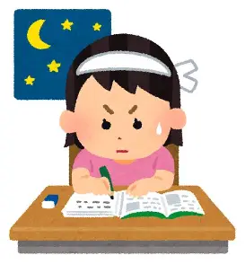

これからの目標☆彡
私がこれから頑張りたいことを紹介します‼
① 学校を欠席しない
学校の欠席日数はこれからの就職に関係するため、体調管理に気を付け、欠席0を目指したいです。
② 学校とバイトの両立を頑張る
最近バイトをはじめて、学校との両立が難しいと感じる部分が多いため、どちらも疎かになることがないよう、努力したいです。
③ 資格を取り、できる限りの知識を取り込む
大原学園で学ぶ2年間が無駄になることないよう、努力し、知識を蓄えたいです。
とにかく頑張る:O
